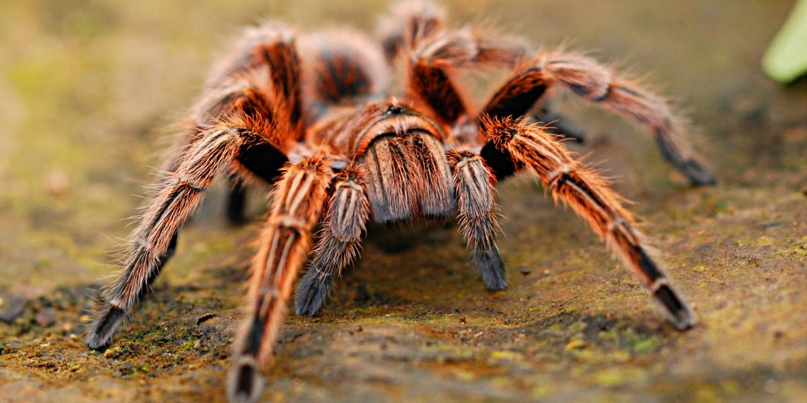

TheraphosidaeIdentificação
A caranguejeira é uma aranha de grande porte, com corpo bastante piloso e pernas grossas, sendo facilmente reconhecida por sua aparência robusta.
Peçonhenta?
Sim, possui peçonha, porém geralmente não apresenta importância médica significativa para os seres humanos.
Importância ecológica
Atua no controle populacional de insetos e pequenos invertebrados, desempenhando papel importante no equilíbrio ecológico.
Apesar de causar medo em muitas pessoas, a caranguejeira é importante para o ambiente e não deve ser morta.